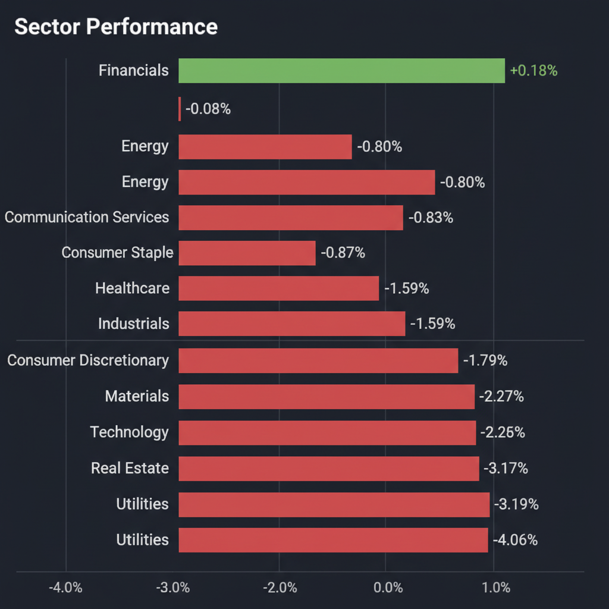
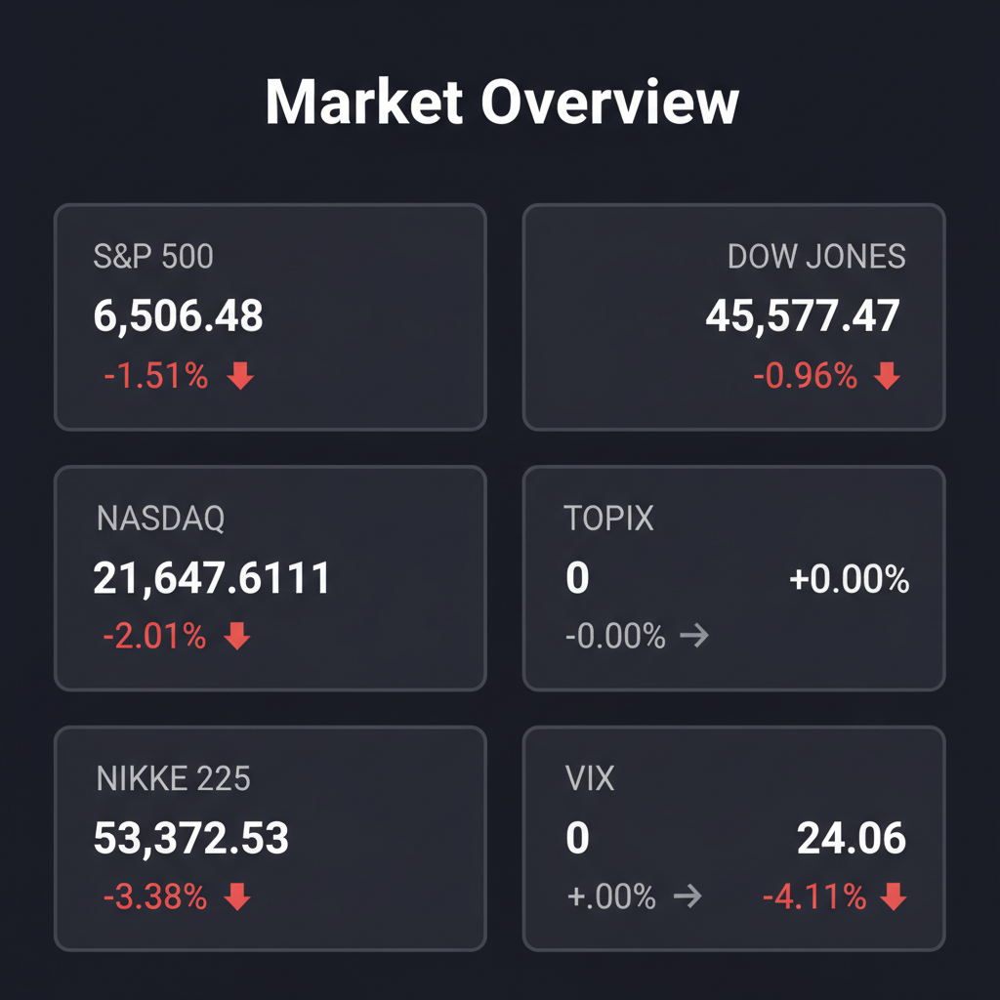

Daily Investment Report - 2026-03-21
Generated: 2026/3/21 8:13:20


投資チームミーティングの議長として、各専門家の分析を統合した最終投資レポートをお届けします。
1. エグゼクティブサマリー
- 中東の地政学リスク激化とエネルギー価格高騰により、インフレ再燃と金利高止まりの「スタグフレーション的ショック」が市場を覆っています。
- AI・ハイテク株はバリュエーション調整とガバナンス懸念により下落トレンド入りし、不動産など金利敏感セクターも総崩れの様相を呈しています。
- 投資家は防御を固めキャッシュ比率を高めつつ、実需が急増する宇宙・防衛関連の中小型株に狙いを定めるべき重要な転換点です。
2. 注目銘柄リスト
強気（買い推奨）
- プラネット・ラブズ（PL） [小型株]: 地政学リスクを背景に各国政府からの衛星画像データ需要（SaaS型継続課金）が急増しており、マクロの逆風を跳ね返す圧倒的な売上成長ポテンシャルを持つため。
- ヨーク・スペース [小型株・IPO直後]: 宇宙の大量生産インフラを構築し、IPO後初の決算で力強い業績ガイダンスを示したことで、防衛予算拡大の直接的な恩恵を受ける次世代の覇者候補であるため。
中立（様子見）
- アドバンス・レジデンス投資法人 [中型株]: 1口3,220円の安定した分配金実績や現物資産の裏付け（ファンダメンタルズ）は魅力的ですが、日米の金利急上昇による調達コスト増やテクニカル面での下落トレンドが強烈な逆風となっており、底打ち確認が必須なため。
- ハネウェル（HON） [大型株]: 資本財の優良株として価格転嫁力とディフェンシブ性があり評価引き上げも報じられていますが、中小型株ほどの成長余地（アップサイド）は見込めず、ポートフォリオの安定剤としての打診買いに留めるべきなため。
弱気（警戒）
- スーパーマイクロ（SMCI） [中・大型株]: 共同創業者の起訴によるコンプライアンスの欠如は、今後の巨額制裁やAIサプライチェーンからの排除など致命的なテールリスクを孕んでおり、PERが割安に見えても典型的な「バリュートラップ」であるため。
- ワーナー・ブラザース・ディスカバリー（WBD） [大型株]: M&Aに伴う経営陣への8億ドル超の巨額報酬の可能性が報じられており、現在の厳しい市場環境下では株主軽視のモラルハザードとして機関投資家の投げ売りを招くリスクがあるため。
3. セクター推奨ランキング
- 1位：エネルギー（XLE） - イラクの不可抗力宣言など中東の供給制約を背景に、市場全体が崩れる中で唯一相対的な強さを保っており、インフレ再燃に対する最強のポートフォリオヘッジとなるため。
- 2位：防衛・宇宙・資本財（XLI等） - 衛星データや軍事インフラなど、将来の期待ではなく「今すぐ必要な実需」に国家レベルの資金が流入しており、不透明な環境下でも持続的な成長が見込めるため。
- 3位：金融（XLF） - 長短金利差の拡大と金利の高止まりが純金利マージン（NIM）の改善に直結し、下落相場でも資金の逃避先として機能しているため。
- 4位：AI・テクノロジー（XLK） - 金利上昇による強烈なバリュエーション調整（割引率の拡大）と、スーパーマイクロ等のコンプライアンス問題が重なり、当面は利益確定の売り圧力が継続するため。
- 5位：不動産・公益（XLRE, XLU） - 住宅ローン金利の急騰がアフォーダビリティを破壊しており、テクニカル的にも完全に主要サポートラインを割り込んでいるため、いかなる押し目買いも回避すべきセクター。
4. 今週の注目イベント
※現在のマクロ環境・ニュースフローに基づく直近の警戒ポイント
- 今週随時： イラクの油田不可抗力（フォース・マジュール）宣言に伴う原油供給網への影響とエネルギー価格の推移
- 今週随時： NATO軍の部隊移動や英国基地の使用を含む、イラン・中東紛争の軍事的進展およびヘッドラインニュース
- 今週随時： 米国の住宅ローン金利の変動と、不動産市場（特にドバイや米国の春の住宅市場）への波及効果
- 今週随時： スーパーマイクロ起訴問題に関連する、米国政府の半導体輸出規制強化および他AIサプライチェーンへの波及動向
5. リスク要因
- スタグフレーションの具現化： イラン紛争の激化で原油価格が急騰し、中央銀行が「景気後退下での利上げ再開」を迫られ、株式と債券が同時に暴落する最悪のシナリオ。
- 流動性枯渇とパニック売り： 株価急落にもかかわらずVIX指数が低下（ダイバージェンス）しており、リスクが過小評価されている状態からの突発的なボラティリティ急拡大リスク。
- 中小型株のリファイナンス危機： 金利の高止まりにより、赤字の宇宙関連株（先行投資型）や有利子負債の多い企業が資金調達難に陥り、株主価値の大幅な希薄化を招くリスク。
- コンセンサスの逆回転ショック： 突如として中東で停戦合意がなされた場合、インフレヘッジとして買いが集中しているエネルギーセクターが急落するリスク。
- J-REITの連れ安リスク： 不動産のファンダメンタルズが良好でも、米国不動産市場の崩壊トレンドと国内金利の急騰が重なることで、REIT市場全体がテクニカルに底抜けするリスク。
6. アクションアイテム
- 本日の優先事項： ポートフォリオ内のキャッシュ（現金同等物・MMF・短期国債など）比率を30%〜50%に引き上げ、ボラティリティ相場を乗り切るための防衛力と流動性を即座に確保する。
- ポジションの縮小・損切り： バリュエーションの高いAI・半導体関連株、および金利上昇の直撃を受ける不動産セクター（REIT含む）のポジションを縮小、または厳格なストップロスを設定する。
- ヘッジポジションの構築： インフレと地政学リスクのヘッジとして、エネルギーセクター（XLE）への打診買いを実行する（ただし、直近サポートライン直下にストップロスを置く絶対条件付き）。
- 次世代テーマ株の監視： マクロの逆風を需要増に変換している宇宙・防衛関連の中小型株（プラネット・ラブズ、ヨーク・スペース）を監視リストに入れ、RSIの低下などテクニカルな底打ちを確認したタイミングでエントリーの準備をする。